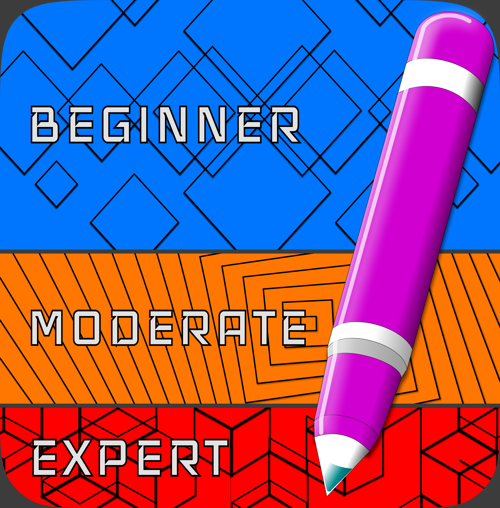

Beginner
100 clues
60 seconds per clue
8 brushes
1× points

Clear & Conquer is an educational browser game about information technology. Reveal parts of a hidden image, identify the object or concept, and read a short fact after each round. The game includes 225 clues across Beginner, Moderate and Expert difficulty modes.
Play on a computer, tablet or phone. Sign in with a username account or Google account to save your progress, choose your profile, and compare your best saved score on each difficulty’s leaderboard.
100 clues
60 seconds per clue
8 brushes
1× points
75 clues
40 seconds per clue
6 brushes
1.5× points
50 clues
25 seconds per clue
5 brushes
2× points
All modes keep their required naming convention. Beginner accepts configured synonyms, meaningful partial answers, abbreviations and extra spaces. Moderate accepts configured synonyms and meaningful partial answers. Expert requires an exact answer.
Save and quit to continue a run later. Each difficulty has its own saved progress and leaderboard. Online leaderboards refresh automatically, and the top three players receive gold, silver and bronze medal positions.
The game also includes light and dark themes, sound and music controls, fullscreen play, profile avatars or photos, and feedback and report submission for signed-in players.
Start discovering